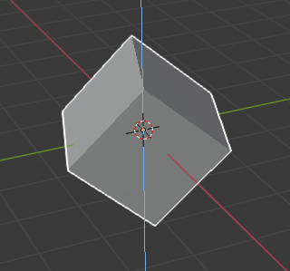
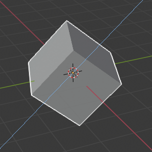
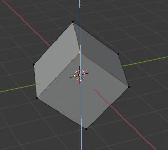
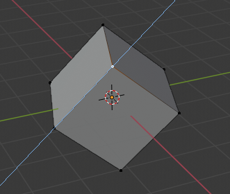

Axis Locking¶
{kind=link}
Axis locking.
This option limits the transformation to the specified axis.
Transformations (translation/scale/rotation) in Object Mode and Edit Mode (as well as extrusions in Edit Mode) can be locked to a particular axis relative to the current transform orientation. By locking a transformation to a particular axis you are restricting transformations to a single dimension.
Usage¶
A locked axis will display in a brighter color than an unlocked axis. For example in the image to the right, the Z axis is shown in light blue as movement is constrained to this axis. This example, can be achieved in two ways:
Hotkey¶
The axis of movement can be changed at any time during transformation by typing X, Y, Z.
Pointing¶
Axis constraint in action.
Holding MMB after starting a transformation lets you select an axis to constrain to. A visual option to constrain the translation will be available, showing the three axes in the 3D View space. A dotted white line is used as a pointer. The axis of choice to confirm the operation will depend on the highlighted axis about which the MMB is released.
When you already moved the mouse in the desired direction, pressing MMB will lock to the axis which was pointed at.
Axis Locking Types¶
Axis Locking¶
Reference
| Mode: | Object and Edit Modes (move, rotate, scale, extrude) |
|---|---|
| Hotkey: | X, Y, Z or MMB after moving the mouse in the desired direction. |
Axis locking limits the transformation to a single axis (or forbids transformations along two axes). An object, face, vertex or other selectable item will only be able to move, scale or rotate in a single dimension.
Plane Locking¶
Reference
| Mode: | Object and Edit Modes (move, scale) |
|---|---|
| Hotkey: | Shift-X, Shift-Y, Shift-Z or Shift-MMB after moving the mouse in the desired direction. |
{kind=link}
Plane locking.
Plane locking locks the transformation to two axes (or forbids transformations along one axis), thus creating a plane in which the element can be moved or scaled freely. Plane locking only affects translation and scaling.
Note that for rotation, both axis and plane locking have the same effect because a rotation is always constrained around one axis. Trackball type rotations R R cannot be locked at all.
Axis Locking Modes¶
A single key press constrains movement to the corresponding Global axis. A second key press of the same key constrains movement to the current transform orientation selection (except if it is set to Global, in which case the Local orientation is used). Finally, a third key press of the same key removes constraints.
The orientation can be set in the Transform Orientation selector of the 3D View header.
For example, if the current transform orientation is set to Normal, pressing G to start translation, followed by Z will lock translation in the Z direction relative to the Global orientation, pressing Z again will lock translation to the Z axis relative to the Normal orientation. Pressing Z again will remove all constraints. The current mode will be displayed in the left-hand side of the 3D View header.

Z axis locking in Global orientation. |

Z axis locking in Local orientation. |

Z axis locking in Global orientation with vertex selection. |

Z axis locking in Normal orientation with vertex selection. |
{kind=link}
{kind=link}
{kind=link}
{kind=link}
As can be seen in the Axis locking modes image, the direction of the transform also takes into account the selection.
Note that using a locked axis does not prevent you from using the keyboard to enter numeric transformation values.